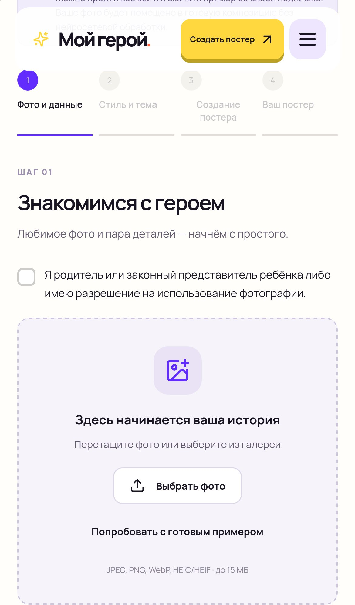
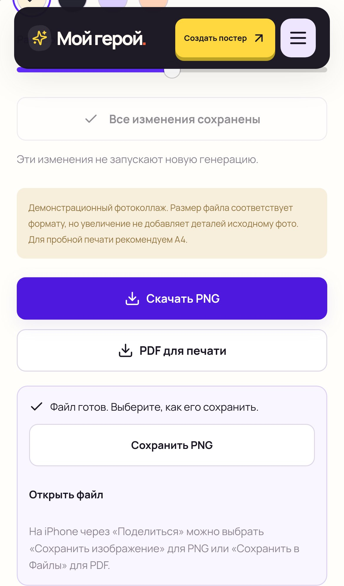

МОЙ ГЕРОЙ · 25 ОКТЯБРЯ 2026
Фотографии с iPhone.
Без ручной конвертации.
Теперь можно выбрать HEIC или HEIF из галереи. Также поддерживаются JPEG, PNG и WebP — до 15 МБ и 40 мегапикселей. В демоверсии фото обрабатывается в вашем браузере.
Открыть конструктор ↗1. Выберите фотографию
Подтвердите право использовать фото и нажмите «Выбрать фото». После загрузки можно кадрировать изображение.


2. Сохраните готовый файл
Нажмите «Скачать PNG» или «PDF для печати», затем «Сохранить PNG/PDF». Если доступна кнопка «Поделиться / Сохранить», можно воспользоваться системным меню. Есть ссылка «Открыть файл».


Проверены загрузка и поворот HEIC, кадрирование, восстановление фото после обновления страницы, поля ввода и скачивание PNG/PDF с кириллицей в Chromium и WebKit с профилем iPhone 13.
Это скриншоты из WebKit. Физический iPhone и системные окна фототеки, клавиатуры и «Поделиться» в облачной среде недоступны — их нужно дополнительно проверить на телефоне.
В скриншотах использован вымышленный персонаж, созданный с помощью ИИ. Конструктор остаётся демонстрационным; генерация нейросетью не подключена. Другие обновления и скриншоты →